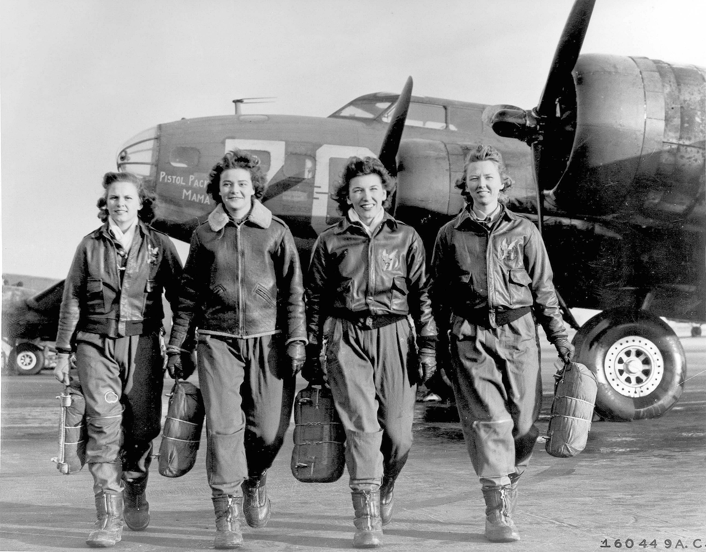

Rosie the Riveter
The full involvement of the US in the war,
the Japanese bombing of Pearl Harbor and
the gap of the labor force, caused by departing
soldiers also meant possibilities for women.
the Japanese bombing of Pearl Harbor and
the gap of the labor force, caused by departing
soldiers also meant possibilities for women.
5 millions of women entered the work force, and more than 300,000 women joined the army between 1941 - 1945. For once women’s paid labor went beyond any type of traditional female professions such as knitting, sewing…
Advertising and Magazines played in major role in encouraging women to join the forces. “Rosie the Riveter” is the name of a fictional character symbolizing all the women that were involved in World War II. It was initially designed by The Artist Norman Rockwell, and was used as the cover of Saturday Evening Post, one of the most popular magazines of the time with to encourage women to join the labor force.
It was known as the “We can do it” image which then, forty years later, became known by the name “Rosie the Riveter”. The poster was one of the 42 posters designed by Norman Rockwell, and was part of a much bigger campaign.
The cover was entitled “Rosie to the Rescue” and portrayed a women, dressed in a patriotic costume, “capable of doing any number of civilian jobs nurse, mechanic, telephone operator. Milkman, farmer, etc..” The government was direct about the propaganda. They were asking publishers to participate in the “Women at work cover promotion” with the slogan the more women at work the sooner we win." Around 125 million advertisements were produced as posters and full-page magazine ads.”
Advertising and Magazines played in major role in encouraging women to join the forces. “Rosie the Riveter” is the name of a fictional character symbolizing all the women that were involved in World War II. It was initially designed by The Artist Norman Rockwell, and was used as the cover of Saturday Evening Post, one of the most popular magazines of the time with to encourage women to join the labor force.
It was known as the “We can do it” image which then, forty years later, became known by the name “Rosie the Riveter”. The poster was one of the 42 posters designed by Norman Rockwell, and was part of a much bigger campaign.
The Saturday Evening Post used Norman Rockwell once again for the September 4th 1943 issue.
The cover was entitled “Rosie to the Rescue” and portrayed a women, dressed in a patriotic costume, “capable of doing any number of civilian jobs nurse, mechanic, telephone operator. Milkman, farmer, etc..” The government was direct about the propaganda. They were asking publishers to participate in the “Women at work cover promotion” with the slogan the more women at work the sooner we win." Around 125 million advertisements were produced as posters and full-page magazine ads.”
